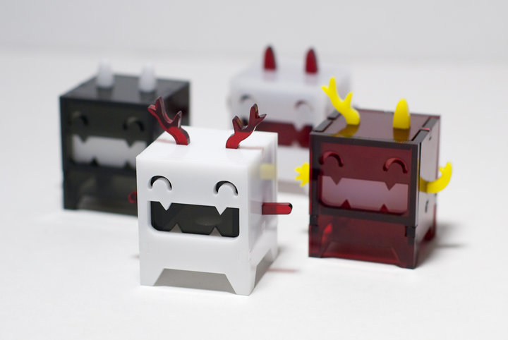
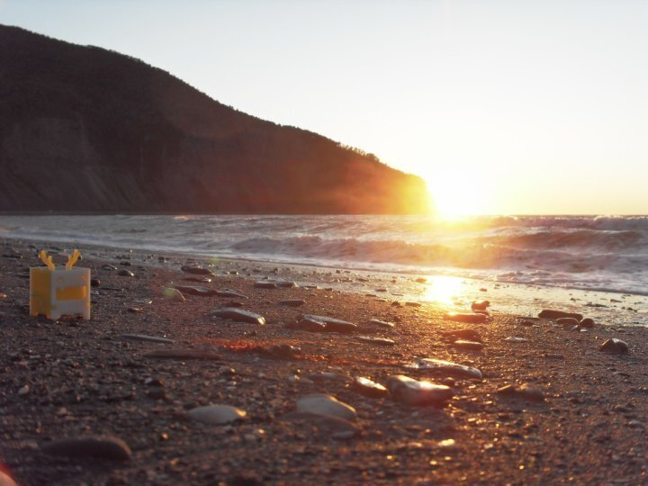
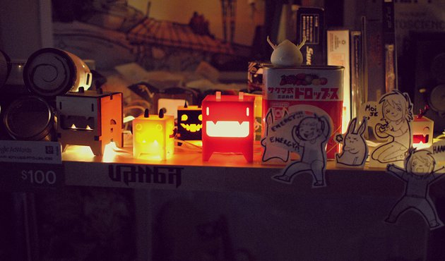
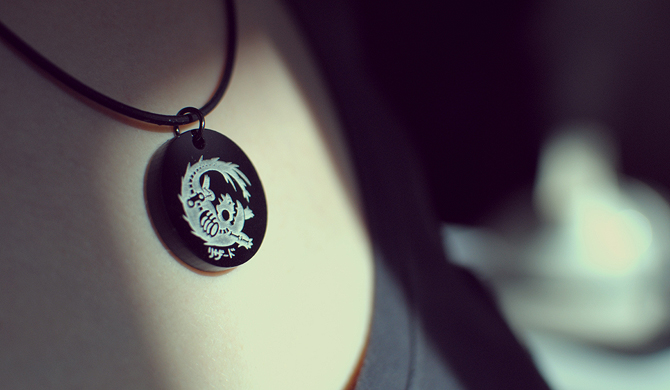
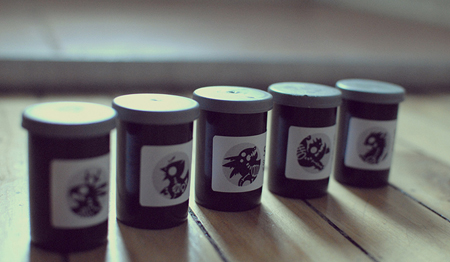
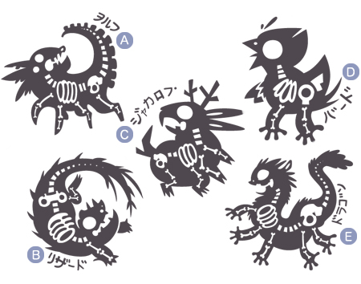
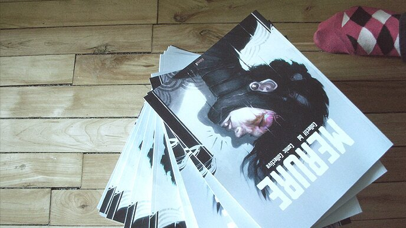
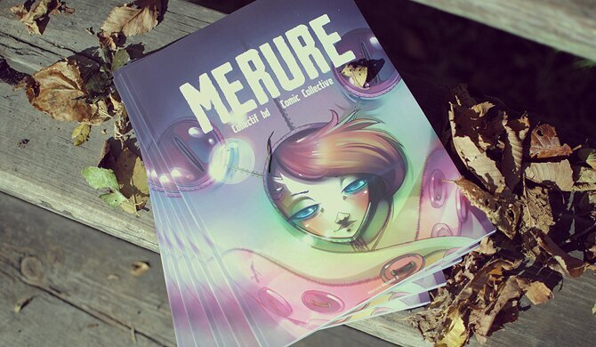
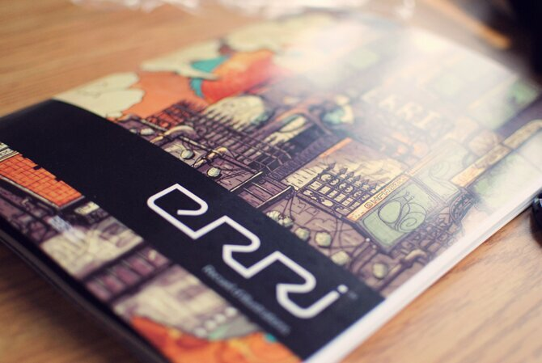
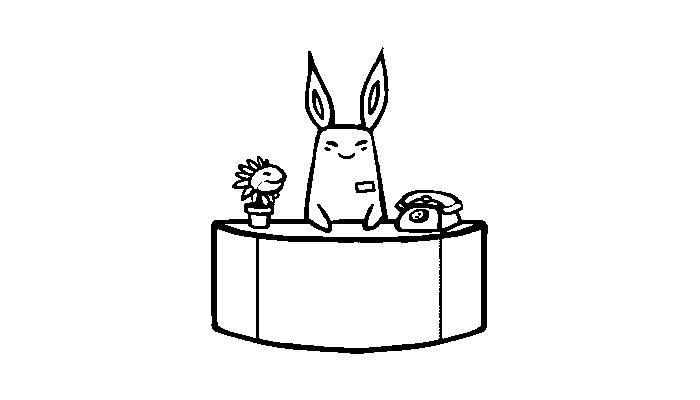

Drownspire was a small studio run by myself and devine between 2010 to 2012. We designed, produced and sold art projects. We made art toys, jewlery, apparel and sold tickets for Toy Company shows (a chiptune event in Montreal).
We closed the studio after we decided to move to Tokyo. Drownspire was the precursor to hundredrabbits.
Projects
Vambits
Vambits were small designer toys that had to be assembled. The material was easily customizable, that way people could make them look exactly the way they wanted. These happy little critters brought a bit of liveliness to any living space. A Vambit was about 4cm x 3cm x 3cm and crafted in non-toxic and recyclable acrylic plastic.
They were featured at the San Francisco Maker Faire.
Vambits came with an instruction sheet and 15 acrylic pieces that snapped together. We had a variety of colors and shapes for faces, ears and arms.
Pictured above is the 1st and 2nd generation of Vambits. The first was larger. We also made one out of wood, the only one we still carry aboard pino.
Unfortunately, some people ripped off the design and while in Australia we saw a vambit-like toy for sale in a store. It is what it is.
Skeli
SKELI were creatures that no longer exist but that had left their skeletons behind for us to find. They were designs etched in acryclic and crafted into a necklace. The necklace was made of 18 inch long (2 mm thick) black rubber, and it had a soft clasp for a secure and easy lock. The pendant was held up by a black nickel jump ring.
They were sold in old film casings, with an identifying sticker.
There were 5 designs, with their names etched in Japanese katakana. A) pronounced "Wo-ru-fu", B) pronounced "Ri-zaa-do", C) pronounced "Jya-ka-ro-pu", D) pronounced "Baa-do" and E) pronounced "Do-ra-gon".
Merure
Merure was a compilation of short comics created by artists all originating from Montreal, Canada. Each one of them had three months to come up with a concept, from thumbnail sketches to final product, without thematic or technical constraints, while juggling with their professional or student lives. The result was a myriad of styles and ideas which made others discover an ecclectic side to the underground comic arts.
We published 3 books in total. We made no profits on these books. The extra money was used to pay off the publishing fees of the next books, and to pay for tables at comic events like Expozine.
Erri
ERRI was an illustration book featuring artists from Quebec. We only printed one book. This volume was a 250 copies limited edition anthology created and produced in Montreal on June 2nd 2010. This book was a collaboration project with Michael Verhaaf and Vincent Desbiens.
It featured the art of David Mondou-Labbe, Jessica Lindsay, Mathieu Choquet, Vincent Desbiens, Michael Verhaaf, Alexandre Boyer, Valerie Bastille, Samantha Leriche-Gionet, Frederic Dupere, Mathieu Beaulieu, Joel Prittie, Nicolas Francoeur, Mila Anctil, Thomas Leblanc, Veronique Comeau, Etienne Aubry, Jonathan Robert, Sarah Baril, Gabriel Malette, Marianne Vincent, Emmanuel Perron, Ahmed Kassem, Edith Lebel, Eve Archambault, Marc Brunet, Fred Benett, Camilie Leduc, Duy Thang Nguyen, Bernard Leduc, Benjamin Arcand, Audrey Malo, Marie-Claude Marquis, Jared Karnas, Gwendal Creurer, Marc-Antoine Roy, Christian Lanouette and Pierre Nicolas Riou.
